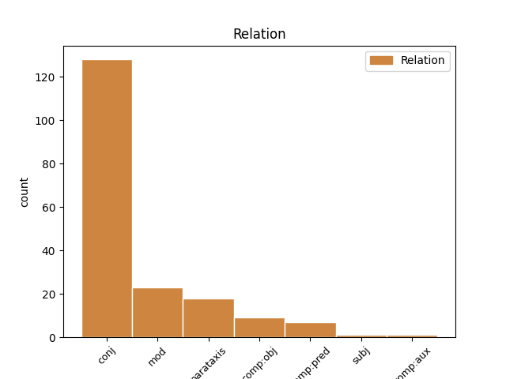
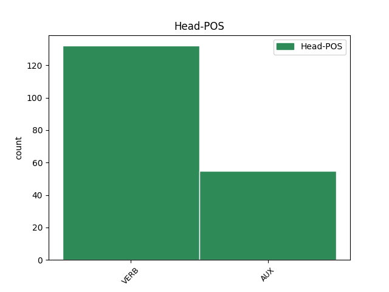
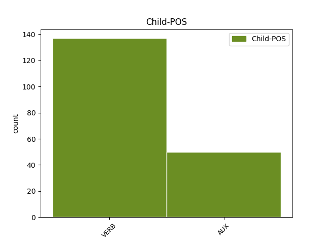

Distribution of features within this leaf



Agreement Rules sorted by frequency.
- When the dependent token is the conjunct(conj) of the head token, and the head token is VERB and the dependent token is VERB.
1 Costa-Gavras _ _ _ _ 0 _ _ _
2 , _ _ _ _ 0 _ _ _
3 con _ _ _ _ 0 _ _ _
4 a _ _ _ _ 0 _ _ _
5 súa _ _ _ _ 0 _ _ _
6 película _ _ _ _ 0 _ _ _
7 Le _ _ _ _ 0 _ _ _
8 Couperet _ _ _ _ 0 _ _ _
9 , _ _ _ _ 0 _ _ _
10 acaba _ _ _ _ 0 _ _ _
11 de _ _ _ _ 0 _ _ _
12 resaltar _ _ _ _ 0 _ _ _
13 de _ _ _ _ 0 _ _ _
14 forma _ _ _ _ 0 _ _ _
15 dramática _ _ _ _ 0 _ _ _
16 cómo _ _ _ _ 0 _ _ _
17 humilla _ _ _ _ 0 _ _ _
18 , _ _ _ _ 0 _ _ _
19 aniquila aniquilar VERB Vpi30s Mood=Ind|Number=Sing|Person=3|Tense=Pres|VerbForm=Fin 0 _ _ _
20 , _ _ _ _ 0 _ _ _
21 deprime deprimir VERB Vpi30s Mood=Ind|Number=Sing|Person=3|Tense=Pres|VerbForm=Fin 19 conj _ _
22 e _ _ _ _ 0 _ _ _
23 até _ _ _ _ 0 _ _ _
24 pode _ _ _ _ 0 _ _ _
25 volver _ _ _ _ 0 _ _ _
26 a _ _ _ _ 0 _ _ _
27 un _ _ _ _ 0 _ _ _
28 tolo _ _ _ _ 0 _ _ _
29 a _ _ _ _ 0 _ _ _
30 perda _ _ _ _ 0 _ _ _
31 de _ _ _ _ 0 _ _ _
32 o _ _ _ _ 0 _ _ _
33 traballo _ _ _ _ 0 _ _ _
34 . _ _ _ _ 0 _ _ _
1 Nunca _ _ _ _ 0 _ _ _
2 foi ser AUX Vei30s Mood=Ind|Number=Sing|Person=3|Tense=Past|VerbForm=Fin 0 _ _ _
3 tan _ _ _ _ 0 _ _ _
4 barato _ _ _ _ 0 _ _ _
5 alugar _ _ _ _ 0 _ _ _
6 un _ _ _ _ 0 _ _ _
7 piso _ _ _ _ 0 _ _ _
8 en _ _ _ _ 0 _ _ _
9 esta _ _ _ _ 0 _ _ _
10 cidade _ _ _ _ 0 _ _ _
11 e _ _ _ _ 0 _ _ _
12 , _ _ _ _ 0 _ _ _
13 aínda _ _ _ _ 0 _ _ _
14 así _ _ _ _ 0 _ _ _
15 , _ _ _ _ 0 _ _ _
16 fontes _ _ _ _ 0 _ _ _
17 inmobiliarias _ _ _ _ 0 _ _ _
18 sitúan situar VERB Vpi30p Mood=Ind|Number=Plur|Person=3|Tense=Pres|VerbForm=Fin 2 conj _ _
19 en _ _ _ _ 0 _ _ _
20 máis _ _ _ _ 0 _ _ _
21 de _ _ _ _ 0 _ _ _
22 6.000 _ _ _ _ 0 _ _ _
23 os _ _ _ _ 0 _ _ _
24 que _ _ _ _ 0 _ _ _
25 teñen _ _ _ _ 0 _ _ _
26 dificultades _ _ _ _ 0 _ _ _
27 para _ _ _ _ 0 _ _ _
28 atopar _ _ _ _ 0 _ _ _
29 inquilinos _ _ _ _ 0 _ _ _
30 . _ _ _ _ 0 _ _ _
1 Rexuveneceu rexuvenecer VERB Vei30s Mood=Ind|Number=Sing|Person=3|Tense=Past|VerbForm=Fin 0 _ _ _
2 se _ _ _ _ 0 _ _ _
3 o _ _ _ _ 0 _ _ _
4 plantel _ _ _ _ 0 _ _ _
5 e _ _ _ _ 0 _ _ _
6 a _ _ _ _ 0 _ _ _
7 perda _ _ _ _ 0 _ _ _
8 de _ _ _ _ 0 _ _ _
9 traballo _ _ _ _ 0 _ _ _
10 non _ _ _ _ 0 _ _ _
11 foi ser AUX Vei30s Mood=Ind|Number=Sing|Person=3|Tense=Past|VerbForm=Fin 1 conj _ _
12 neta _ _ _ _ 0 _ _ _
13 . _ _ _ _ 0 _ _ _
1 Os _ _ _ _ 0 _ _ _
2 estaleiros _ _ _ _ 0 _ _ _
3 de _ _ _ _ 0 _ _ _
4 Ferrol _ _ _ _ 0 _ _ _
5 , _ _ _ _ 0 _ _ _
6 que _ _ _ _ 0 _ _ _
7 ocupaban ocupar VERB Vii30p Mood=Ind|Number=Plur|Person=3|Tense=Imp|VerbForm=Fin 0 _ _ _
8 arredor _ _ _ _ 0 _ _ _
9 de _ _ _ _ 0 _ _ _
10 14.000 _ _ _ _ 0 _ _ _
11 traballadores _ _ _ _ 0 _ _ _
12 cando _ _ _ _ 0 _ _ _
13 corrían correr VERB Vii30p Mood=Ind|Number=Plur|Person=3|Tense=Imp|VerbForm=Fin 7 mod _ _
14 os _ _ _ _ 0 _ _ _
15 anos _ _ _ _ 0 _ _ _
16 70 _ _ _ _ 0 _ _ _
17 , _ _ _ _ 0 _ _ _
18 fican _ _ _ _ 0 _ _ _
19 agora _ _ _ _ 0 _ _ _
20 atendidos _ _ _ _ 0 _ _ _
21 por _ _ _ _ 0 _ _ _
22 2.000 _ _ _ _ 0 _ _ _
23 , _ _ _ _ 0 _ _ _
24 en _ _ _ _ 0 _ _ _
25 a _ _ _ _ 0 _ _ _
26 súa _ _ _ _ 0 _ _ _
27 maior _ _ _ _ 0 _ _ _
28 parte _ _ _ _ 0 _ _ _
29 administrativos _ _ _ _ 0 _ _ _
30 e _ _ _ _ 0 _ _ _
31 técnicos _ _ _ _ 0 _ _ _
32 . _ _ _ _ 0 _ _ _
1 De _ _ _ _ 0 _ _ _
2 non _ _ _ _ 0 _ _ _
3 parar _ _ _ _ 0 _ _ _
4 a _ _ _ _ 0 _ _ _
5 sangría _ _ _ _ 0 _ _ _
6 económica _ _ _ _ 0 _ _ _
7 e _ _ _ _ 0 _ _ _
8 social _ _ _ _ 0 _ _ _
9 de _ _ _ _ 0 _ _ _
10 Ferrol _ _ _ _ 0 _ _ _
11 , _ _ _ _ 0 _ _ _
12 o _ _ _ _ 0 _ _ _
13 seu _ _ _ _ 0 _ _ _
14 futuro _ _ _ _ 0 _ _ _
15 é ser AUX Vpi30s Mood=Ind|Number=Sing|Person=3|Tense=Pres|VerbForm=Fin 0 _ _ _
16 moi _ _ _ _ 0 _ _ _
17 negro _ _ _ _ 0 _ _ _
18 e _ _ _ _ 0 _ _ _
19 esta _ _ _ _ 0 _ _ _
20 preocupación _ _ _ _ 0 _ _ _
21 está estar AUX Vpi30s Mood=Ind|Number=Sing|Person=3|Tense=Pres|VerbForm=Fin 15 conj _ _
22 patente _ _ _ _ 0 _ _ _
23 xa _ _ _ _ 0 _ _ _
24 en _ _ _ _ 0 _ _ _
25 os _ _ _ _ 0 _ _ _
26 habitantes _ _ _ _ 0 _ _ _
27 de _ _ _ _ 0 _ _ _
28 a _ _ _ _ 0 _ _ _
29 cidade _ _ _ _ 0 _ _ _
30 , _ _ _ _ 0 _ _ _
31 agora _ _ _ _ 0 _ _ _
32 mesmo _ _ _ _ 0 _ _ _
33 máis _ _ _ _ 0 _ _ _
34 desmoralizados _ _ _ _ 0 _ _ _
35 que _ _ _ _ 0 _ _ _
36 nunca _ _ _ _ 0 _ _ _
37 . _ _ _ _ 0 _ _ _
1 " _ _ _ _ 0 _ _ _
2 Cando _ _ _ _ 0 _ _ _
3 me _ _ _ _ 0 _ _ _
4 propuxeron propoñer VERB Vei30p Mood=Ind|Number=Plur|Person=3|Tense=Past|VerbForm=Fin 0 _ _ _
5 a _ _ _ _ 0 _ _ _
6 tradución _ _ _ _ 0 _ _ _
7 _ _ _ _ _ 0 _ _ _
8 lembra lembrar VERB Vpi30s Mood=Ind|Number=Sing|Person=3|Tense=Pres|VerbForm=Fin 4 parataxis _ _
9 Arias _ _ _ _ 0 _ _ _
10 _ _ _ _ _ 0 _ _ _
11 pensei _ _ _ _ 0 _ _ _
12 que _ _ _ _ 0 _ _ _
13 era _ _ _ _ 0 _ _ _
14 unha _ _ _ _ 0 _ _ _
15 oportunidade _ _ _ _ 0 _ _ _
16 que _ _ _ _ 0 _ _ _
17 non _ _ _ _ 0 _ _ _
18 se _ _ _ _ 0 _ _ _
19 podía _ _ _ _ 0 _ _ _
20 desperdiciar _ _ _ _ 0 _ _ _
21 e _ _ _ _ 0 _ _ _
22 de _ _ _ _ 0 _ _ _
23 unha _ _ _ _ 0 _ _ _
24 grande _ _ _ _ 0 _ _ _
25 importancia _ _ _ _ 0 _ _ _
26 para _ _ _ _ 0 _ _ _
27 a _ _ _ _ 0 _ _ _
28 normalización _ _ _ _ 0 _ _ _
29 de _ _ _ _ 0 _ _ _
30 o _ _ _ _ 0 _ _ _
31 galego _ _ _ _ 0 _ _ _
32 . _ _ _ _ 0 _ _ _
1 O _ _ _ _ 0 _ _ _
2 século _ _ _ _ 0 _ _ _
3 XX _ _ _ _ 0 _ _ _
4 , _ _ _ _ 0 _ _ _
5 pois _ _ _ _ 0 _ _ _
6 é ser AUX Vpi30s Mood=Ind|Number=Sing|Person=3|Tense=Pres|VerbForm=Fin 0 _ _ _
7 cando _ _ _ _ 0 _ _ _
8 se _ _ _ _ 0 _ _ _
9 fixeron facer VERB Vei30p Mood=Ind|Number=Plur|Person=3|Tense=Past|VerbForm=Fin 6 comp:pred _ _
10 máis _ _ _ _ 0 _ _ _
11 obras _ _ _ _ 0 _ _ _
12 , _ _ _ _ 0 _ _ _
13 onde _ _ _ _ 0 _ _ _
14 incluso _ _ _ _ 0 _ _ _
15 compositores _ _ _ _ 0 _ _ _
16 non _ _ _ _ 0 _ _ _
17 guitarristas _ _ _ _ 0 _ _ _
18 compuxeron _ _ _ _ 0 _ _ _
19 para _ _ _ _ 0 _ _ _
20 este _ _ _ _ 0 _ _ _
21 instrumento _ _ _ _ 0 _ _ _
22 . _ _ _ _ 0 _ _ _
1 O _ _ _ _ 0 _ _ _
2 século _ _ _ _ 0 _ _ _
3 XX _ _ _ _ 0 _ _ _
4 , _ _ _ _ 0 _ _ _
5 pois _ _ _ _ 0 _ _ _
6 é ser AUX Vpi30s Mood=Ind|Number=Sing|Person=3|Tense=Pres|VerbForm=Fin 0 _ _ _
7 cando _ _ _ _ 0 _ _ _
8 se _ _ _ _ 0 _ _ _
9 fixeron _ _ _ _ 0 _ _ _
10 máis _ _ _ _ 0 _ _ _
11 obras _ _ _ _ 0 _ _ _
12 , _ _ _ _ 0 _ _ _
13 onde _ _ _ _ 0 _ _ _
14 incluso _ _ _ _ 0 _ _ _
15 compositores _ _ _ _ 0 _ _ _
16 non _ _ _ _ 0 _ _ _
17 guitarristas _ _ _ _ 0 _ _ _
18 compuxeron compoñer VERB Vei30p Mood=Ind|Number=Plur|Person=3|Tense=Past|VerbForm=Fin 6 mod _ _
19 para _ _ _ _ 0 _ _ _
20 este _ _ _ _ 0 _ _ _
21 instrumento _ _ _ _ 0 _ _ _
22 . _ _ _ _ 0 _ _ _
1 Este _ _ _ _ 0 _ _ _
2 premio _ _ _ _ 0 _ _ _
3 consolida consolidar VERB Vpi30s Mood=Ind|Number=Sing|Person=3|Tense=Pres|VerbForm=Fin 0 _ _ _
4 definitivamente _ _ _ _ 0 _ _ _
5 a _ _ _ _ 0 _ _ _
6 quen _ _ _ _ 0 _ _ _
7 xa _ _ _ _ 0 _ _ _
8 estaba estar AUX Vii30s Mood=Ind|Number=Sing|Person=3|Tense=Imp|VerbForm=Fin 3 comp:obj _ _
9 considerado _ _ _ _ 0 _ _ _
10 un _ _ _ _ 0 _ _ _
11 de _ _ _ _ 0 _ _ _
12 os _ _ _ _ 0 _ _ _
13 máis _ _ _ _ 0 _ _ _
14 talentosos _ _ _ _ 0 _ _ _
15 intérpretes _ _ _ _ 0 _ _ _
16 de _ _ _ _ 0 _ _ _
17 a _ _ _ _ 0 _ _ _
18 guitarra _ _ _ _ 0 _ _ _
19 clásica _ _ _ _ 0 _ _ _
20 . _ _ _ _ 0 _ _ _
1 É ser AUX Vpi30s Mood=Ind|Number=Sing|Person=3|Tense=Pres|VerbForm=Fin 0 _ _ _
2 unha _ _ _ _ 0 _ _ _
3 de _ _ _ _ 0 _ _ _
4 as _ _ _ _ 0 _ _ _
5 grandes _ _ _ _ 0 _ _ _
6 artes _ _ _ _ 0 _ _ _
7 que _ _ _ _ 0 _ _ _
8 nos _ _ _ _ 0 _ _ _
9 toca _ _ _ _ 0 _ _ _
10 un _ _ _ _ 0 _ _ _
11 nervio _ _ _ _ 0 _ _ _
12 , _ _ _ _ 0 _ _ _
13 unha _ _ _ _ 0 _ _ _
14 emoción _ _ _ _ 0 _ _ _
15 que _ _ _ _ 0 _ _ _
16 as _ _ _ _ 0 _ _ _
17 outras _ _ _ _ 0 _ _ _
18 non _ _ _ _ 0 _ _ _
19 son _ _ _ _ 0 _ _ _
20 quen _ _ _ _ 0 _ _ _
21 de _ _ _ _ 0 _ _ _
22 tocar _ _ _ _ 0 _ _ _
23 ... _ _ _ _ 0 _ _ _
24 chega chegar VERB Vpi30s Mood=Ind|Number=Sing|Person=3|Tense=Pres|VerbForm=Fin 1 parataxis _ _
25 a _ _ _ _ 0 _ _ _
26 o _ _ _ _ 0 _ _ _
27 corazón _ _ _ _ 0 _ _ _
28 de _ _ _ _ 0 _ _ _
29 outra _ _ _ _ 0 _ _ _
30 maneira _ _ _ _ 0 _ _ _
31 . _ _ _ _ 0 _ _ _
1 Pero _ _ _ _ 0 _ _ _
2 claro _ _ _ _ 0 _ _ _
3 , _ _ _ _ 0 _ _ _
4 Madonna _ _ _ _ 0 _ _ _
5 fai _ _ _ _ 0 _ _ _
6 un _ _ _ _ 0 _ _ _
7 concerto _ _ _ _ 0 _ _ _
8 e _ _ _ _ 0 _ _ _
9 gasta _ _ _ _ 0 _ _ _
10 se _ _ _ _ 0 _ _ _
11 moito _ _ _ _ 0 _ _ _
12 diñeiro _ _ _ _ 0 _ _ _
13 en _ _ _ _ 0 _ _ _
14 promoción _ _ _ _ 0 _ _ _
15 , _ _ _ _ 0 _ _ _
16 sen _ _ _ _ 0 _ _ _
17 embargo _ _ _ _ 0 _ _ _
18 toca _ _ _ _ 0 _ _ _
19 un _ _ _ _ 0 _ _ _
20 grande _ _ _ _ 0 _ _ _
21 pianista _ _ _ _ 0 _ _ _
22 e _ _ _ _ 0 _ _ _
23 non _ _ _ _ 0 _ _ _
24 se _ _ _ _ 0 _ _ _
25 fai facer VERB Vpi30s Mood=Ind|Number=Sing|Person=3|Tense=Pres|VerbForm=Fin 0 _ _ _
26 ese _ _ _ _ 0 _ _ _
27 mesmo _ _ _ _ 0 _ _ _
28 esforzo _ _ _ _ 0 _ _ _
29 promocional _ _ _ _ 0 _ _ _
30 , _ _ _ _ 0 _ _ _
31 por _ _ _ _ 0 _ _ _
32 lo _ _ _ _ 0 _ _ _
33 que _ _ _ _ 0 _ _ _
34 estamos estar AUX Vpi10p Mood=Ind|Number=Plur|Person=1|Tense=Pres|VerbForm=Fin 25 mod _ _
35 tamén _ _ _ _ 0 _ _ _
36 diante _ _ _ _ 0 _ _ _
37 de _ _ _ _ 0 _ _ _
38 razóns _ _ _ _ 0 _ _ _
39 comerciais _ _ _ _ 0 _ _ _
40 . _ _ _ _ 0 _ _ _
1 Esta _ _ _ _ 0 _ _ _
2 película _ _ _ _ 0 _ _ _
3 , _ _ _ _ 0 _ _ _
4 moi _ _ _ _ 0 _ _ _
5 cinxida _ _ _ _ 0 _ _ _
6 a _ _ _ _ 0 _ _ _
7 o _ _ _ _ 0 _ _ _
8 que _ _ _ _ 0 _ _ _
9 pretende _ _ _ _ 0 _ _ _
10 narrar _ _ _ _ 0 _ _ _
11 , _ _ _ _ 0 _ _ _
12 eses _ _ _ _ 0 _ _ _
13 últimos _ _ _ _ 0 _ _ _
14 días _ _ _ _ 0 _ _ _
15 de _ _ _ _ 0 _ _ _
16 a _ _ _ _ 0 _ _ _
17 guerra _ _ _ _ 0 _ _ _
18 , _ _ _ _ 0 _ _ _
19 non _ _ _ _ 0 _ _ _
20 evita _ _ _ _ 0 _ _ _
21 non _ _ _ _ 0 _ _ _
22 embargante _ _ _ _ 0 _ _ _
23 ( _ _ _ _ 0 _ _ _
24 e _ _ _ _ 0 _ _ _
25 pese pesar VERB Vps30s Mood=Sub|Number=Sing|Person=3|Tense=Pres|VerbForm=Fin 29 comp:obj _ _
26 a _ _ _ _ 0 _ _ _
27 o _ _ _ _ 0 _ _ _
28 que _ _ _ _ 0 _ _ _
29 diga dicir VERB Vps30s Mood=Sub|Number=Sing|Person=3|Tense=Pres|VerbForm=Fin 0 _ _ _
30 Wenders _ _ _ _ 0 _ _ _
31 ) _ _ _ _ 0 _ _ _
32 algúns _ _ _ _ 0 _ _ _
33 pertinentes _ _ _ _ 0 _ _ _
34 punteos _ _ _ _ 0 _ _ _
35 que _ _ _ _ 0 _ _ _
36 contextualizan _ _ _ _ 0 _ _ _
37 os _ _ _ _ 0 _ _ _
38 feitos _ _ _ _ 0 _ _ _
39 . _ _ _ _ 0 _ _ _
1 Emilio _ _ _ _ 0 _ _ _
2 Cagiao _ _ _ _ 0 _ _ _
3 , _ _ _ _ 0 _ _ _
4 secretario _ _ _ _ 0 _ _ _
5 de _ _ _ _ 0 _ _ _
6 a _ _ _ _ 0 _ _ _
7 CIG _ _ _ _ 0 _ _ _
8 en _ _ _ _ 0 _ _ _
9 Ferrol _ _ _ _ 0 _ _ _
10 , _ _ _ _ 0 _ _ _
11 di _ _ _ _ 0 _ _ _
12 que _ _ _ _ 0 _ _ _
13 " _ _ _ _ 0 _ _ _
14 e ser AUX Vpi30s Mood=Ind|Number=Sing|Person=3|Tense=Pres|VerbForm=Fin 0 _ _ _
15 unha _ _ _ _ 0 _ _ _
16 verdadeira _ _ _ _ 0 _ _ _
17 vergonza _ _ _ _ 0 _ _ _
18 que _ _ _ _ 0 _ _ _
19 se _ _ _ _ 0 _ _ _
20 estea _ _ _ _ 0 _ _ _
21 xogando _ _ _ _ 0 _ _ _
22 con _ _ _ _ 0 _ _ _
23 os _ _ _ _ 0 _ _ _
24 traballadores _ _ _ _ 0 _ _ _
25 por _ _ _ _ 0 _ _ _
26 non _ _ _ _ 0 _ _ _
27 dar _ _ _ _ 0 _ _ _
28 lle _ _ _ _ 0 _ _ _
29 solución _ _ _ _ 0 _ _ _
30 a _ _ _ _ 0 _ _ _
31 o _ _ _ _ 0 _ _ _
32 que _ _ _ _ 0 _ _ _
33 eles _ _ _ _ 0 _ _ _
34 chaman _ _ _ _ 0 _ _ _
35 " _ _ _ _ 0 _ _ _
36 flecos _ _ _ _ 0 _ _ _
37 " _ _ _ _ 0 _ _ _
38 , _ _ _ _ 0 _ _ _
39 cando _ _ _ _ 0 _ _ _
40 a _ _ _ _ 0 _ _ _
41 verdadeira _ _ _ _ 0 _ _ _
42 realidade _ _ _ _ 0 _ _ _
43 é ser AUX Vpi30s Mood=Ind|Number=Sing|Person=3|Tense=Pres|VerbForm=Fin 14 mod _ _
44 por _ _ _ _ 0 _ _ _
45 que _ _ _ _ 0 _ _ _
46 os _ _ _ _ 0 _ _ _
47 de _ _ _ _ 0 _ _ _
48 Comisións _ _ _ _ 0 _ _ _
49 queren _ _ _ _ 0 _ _ _
50 prexubilar _ _ _ _ 0 _ _ _
51 tamén _ _ _ _ 0 _ _ _
52 algúns _ _ _ _ 0 _ _ _
53 traballadores _ _ _ _ 0 _ _ _
54 de _ _ _ _ 0 _ _ _
55 as _ _ _ _ 0 _ _ _
56 compañias _ _ _ _ 0 _ _ _
57 auxiliares _ _ _ _ 0 _ _ _
58 con _ _ _ _ 0 _ _ _
59 o _ _ _ _ 0 _ _ _
60 pretexto _ _ _ _ 0 _ _ _
61 de _ _ _ _ 0 _ _ _
62 que _ _ _ _ 0 _ _ _
63 poden _ _ _ _ 0 _ _ _
64 ter _ _ _ _ 0 _ _ _
65 garantía _ _ _ _ 0 _ _ _
66 de _ _ _ _ 0 _ _ _
67 emprego _ _ _ _ 0 _ _ _
68 . _ _ _ _ 0 _ _ _
1 Teñen _ _ _ _ 0 _ _ _
2 que _ _ _ _ 0 _ _ _
3 saber _ _ _ _ 0 _ _ _
4 que _ _ _ _ 0 _ _ _
5 non _ _ _ _ 0 _ _ _
6 había haber VERB Vii30s Mood=Ind|Number=Sing|Person=3|Tense=Imp|VerbForm=Fin 0 _ _ _
7 ningún _ _ _ _ 0 _ _ _
8 plano _ _ _ _ 0 _ _ _
9 serio _ _ _ _ 0 _ _ _
10 para _ _ _ _ 0 _ _ _
11 facer _ _ _ _ 0 _ _ _
12 lle _ _ _ _ 0 _ _ _
13 fronte _ _ _ _ 0 _ _ _
14 a _ _ _ _ 0 _ _ _
15 o _ _ _ _ 0 _ _ _
16 chapapote _ _ _ _ 0 _ _ _
17 en _ _ _ _ 0 _ _ _
18 as _ _ _ _ 0 _ _ _
19 rías _ _ _ _ 0 _ _ _
20 , _ _ _ _ 0 _ _ _
21 o _ _ _ _ 0 _ _ _
22 único _ _ _ _ 0 _ _ _
23 eran ser AUX Vii30p Mood=Ind|Number=Plur|Person=3|Tense=Imp|VerbForm=Fin 6 parataxis _ _
24 os _ _ _ _ 0 _ _ _
25 plásticos _ _ _ _ 0 _ _ _
26 para _ _ _ _ 0 _ _ _
27 defender _ _ _ _ 0 _ _ _
28 as _ _ _ _ 0 _ _ _
29 bateas _ _ _ _ 0 _ _ _
30 e _ _ _ _ 0 _ _ _
31 dirixir _ _ _ _ 0 _ _ _
32 o _ _ _ _ 0 _ _ _
33 fuel _ _ _ _ 0 _ _ _
34 a _ _ _ _ 0 _ _ _
35 as _ _ _ _ 0 _ _ _
36 zonas _ _ _ _ 0 _ _ _
37 de _ _ _ _ 0 _ _ _
38 sacrificio _ _ _ _ 0 _ _ _
39 internas _ _ _ _ 0 _ _ _
40 , _ _ _ _ 0 _ _ _
41 que _ _ _ _ 0 _ _ _
42 non _ _ _ _ 0 _ _ _
43 se _ _ _ _ 0 _ _ _
44 puxeron _ _ _ _ 0 _ _ _
45 as _ _ _ _ 0 _ _ _
46 barreiras _ _ _ _ 0 _ _ _
47 prometidas _ _ _ _ 0 _ _ _
48 , _ _ _ _ 0 _ _ _
49 que _ _ _ _ 0 _ _ _
50 as _ _ _ _ 0 _ _ _
51 quixeron _ _ _ _ 0 _ _ _
52 poñer _ _ _ _ 0 _ _ _
53 as _ _ _ _ 0 _ _ _
54 romperon _ _ _ _ 0 _ _ _
55 os _ _ _ _ 0 _ _ _
56 propios _ _ _ _ 0 _ _ _
57 técnicos _ _ _ _ 0 _ _ _
58 de _ _ _ _ 0 _ _ _
59 SASEMAR _ _ _ _ 0 _ _ _
60 . _ _ _ _ 0 _ _ _
1 En _ _ _ _ 0 _ _ _
2 o _ _ _ _ 0 _ _ _
3 que _ _ _ _ 0 _ _ _
4 si _ _ _ _ 0 _ _ _
5 está _ _ _ _ 0 _ _ _
6 de _ _ _ _ 0 _ _ _
7 acordo _ _ _ _ 0 _ _ _
8 é ser AUX Vpi30s Mood=Ind|Number=Sing|Person=3|Tense=Pres|VerbForm=Fin 13 comp:aux _ _
9 en _ _ _ _ 0 _ _ _
10 que _ _ _ _ 0 _ _ _
11 os _ _ _ _ 0 _ _ _
12 cidadáns _ _ _ _ 0 _ _ _
13 deben deber AUX Vpi30p Mood=Ind|Number=Plur|Person=3|Tense=Pres|VerbForm=Fin 0 _ _ _
14 de _ _ _ _ 0 _ _ _
15 visualizar _ _ _ _ 0 _ _ _
16 un _ _ _ _ 0 _ _ _
17 goberno _ _ _ _ 0 _ _ _
18 conxunto _ _ _ _ 0 _ _ _
19 entre _ _ _ _ 0 _ _ _
20 ambas _ _ _ _ 0 _ _ _
21 as _ _ _ _ 0 _ _ _
22 formacións _ _ _ _ 0 _ _ _
23 , _ _ _ _ 0 _ _ _
24 condenadas _ _ _ _ 0 _ _ _
25 a _ _ _ _ 0 _ _ _
26 entender _ _ _ _ 0 _ _ _
27 se _ _ _ _ 0 _ _ _
28 , _ _ _ _ 0 _ _ _
29 por _ _ _ _ 0 _ _ _
30 moito _ _ _ _ 0 _ _ _
31 que _ _ _ _ 0 _ _ _
32 se _ _ _ _ 0 _ _ _
33 disputen _ _ _ _ 0 _ _ _
34 a _ _ _ _ 0 _ _ _
35 primacía _ _ _ _ 0 _ _ _
36 a _ _ _ _ 0 _ _ _
37 a _ _ _ _ 0 _ _ _
38 hora _ _ _ _ 0 _ _ _
39 de _ _ _ _ 0 _ _ _
40 liderar _ _ _ _ 0 _ _ _
41 ese _ _ _ _ 0 _ _ _
42 cambio _ _ _ _ 0 _ _ _
43 que _ _ _ _ 0 _ _ _
44 se _ _ _ _ 0 _ _ _
45 albisca _ _ _ _ 0 _ _ _
46 en _ _ _ _ 0 _ _ _
47 a _ _ _ _ 0 _ _ _
48 Galiza _ _ _ _ 0 _ _ _
49 . _ _ _ _ 0 _ _ _
1 Van _ _ _ _ 0 _ _ _
2 quentando _ _ _ _ 0 _ _ _
3 o _ _ _ _ 0 _ _ _
4 ambiente _ _ _ _ 0 _ _ _
5 , _ _ _ _ 0 _ _ _
6 e _ _ _ _ 0 _ _ _
7 chamando _ _ _ _ 0 _ _ _
8 a _ _ _ _ 0 _ _ _
9 os _ _ _ _ 0 _ _ _
10 seus _ _ _ _ 0 _ _ _
11 aliados _ _ _ _ 0 _ _ _
12 para _ _ _ _ 0 _ _ _
13 que _ _ _ _ 0 _ _ _
14 lles _ _ _ _ 0 _ _ _
15 axuden _ _ _ _ 0 _ _ _
16 a _ _ _ _ 0 _ _ _
17 poñer _ _ _ _ 0 _ _ _
18 lume _ _ _ _ 0 _ _ _
19 en _ _ _ _ 0 _ _ _
20 as _ _ _ _ 0 _ _ _
21 denuncias _ _ _ _ 0 _ _ _
22 , _ _ _ _ 0 _ _ _
23 que _ _ _ _ 0 _ _ _
24 normalmente _ _ _ _ 0 _ _ _
25 son ser AUX Vpi30p Mood=Ind|Number=Plur|Person=3|Tense=Pres|VerbForm=Fin 0 _ _ _
26 mentiras _ _ _ _ 0 _ _ _
27 ( _ _ _ _ 0 _ _ _
28 onde _ _ _ _ 0 _ _ _
29 están estar AUX Vpi30p Mood=Ind|Number=Plur|Person=3|Tense=Pres|VerbForm=Fin 25 parataxis _ _
30 as _ _ _ _ 0 _ _ _
31 armas _ _ _ _ 0 _ _ _
32 terroríficas _ _ _ _ 0 _ _ _
33 de _ _ _ _ 0 _ _ _
34 Sadan _ _ _ _ 0 _ _ _
35 ? _ _ _ _ 0 _ _ _
36 ) _ _ _ _ 0 _ _ _
37 . _ _ _ _ 0 _ _ _
1 Por _ _ _ _ 0 _ _ _
2 iso _ _ _ _ 0 _ _ _
3 tamén _ _ _ _ 0 _ _ _
4 pediremos _ _ _ _ 0 _ _ _
5 que _ _ _ _ 0 _ _ _
6 se _ _ _ _ 0 _ _ _
7 limiten _ _ _ _ 0 _ _ _
8 as _ _ _ _ 0 _ _ _
9 prazas _ _ _ _ 0 _ _ _
10 en _ _ _ _ 0 _ _ _
11 a _ _ _ _ 0 _ _ _
12 Facultade _ _ _ _ 0 _ _ _
13 , _ _ _ _ 0 _ _ _
14 con _ _ _ _ 0 _ _ _
15 o _ _ _ _ 0 _ _ _
16 obxectivo _ _ _ _ 0 _ _ _
17 de _ _ _ _ 0 _ _ _
18 que _ _ _ _ 0 _ _ _
19 quen _ _ _ _ 0 _ _ _
20 se _ _ _ _ 0 _ _ _
21 licencie licenciar VERB Vps30s Mood=Sub|Number=Sing|Person=3|Tense=Pres|VerbForm=Fin 22 subj _ _
22 teña ter VERB Vps30s Mood=Sub|Number=Sing|Person=3|Tense=Pres|VerbForm=Fin 0 _ _ _
23 unhas _ _ _ _ 0 _ _ _
24 condicións _ _ _ _ 0 _ _ _
25 salariais _ _ _ _ 0 _ _ _
26 dignas _ _ _ _ 0 _ _ _
27 . _ _ _ _ 0 _ _ _
Disagree Examples:
1 Roberto _ _ _ _ 0 _ _ _
2 Blanco _ _ _ _ 0 _ _ _
3 Valdés _ _ _ _ 0 _ _ _
4 afirma _ _ _ _ 0 _ _ _
5 que _ _ _ _ 0 _ _ _
6 " _ _ _ _ 0 _ _ _
7 Touriño _ _ _ _ 0 _ _ _
8 pode _ _ _ _ 0 _ _ _
9 seguir _ _ _ _ 0 _ _ _
10 con _ _ _ _ 0 _ _ _
11 a _ _ _ _ 0 _ _ _
12 súa _ _ _ _ 0 _ _ _
13 retórica _ _ _ _ 0 _ _ _
14 , _ _ _ _ 0 _ _ _
15 pero _ _ _ _ 0 _ _ _
16 é ser AUX Vpi30s Mood=Ind|Number=Sing|Person=3|Tense=Pres|VerbForm=Fin 0 _ _ _
17 como _ _ _ _ 0 _ _ _
18 se _ _ _ _ 0 _ _ _
19 aspirase aspirar VERB Ves30s Mood=Sub|Number=Sing|Person=3|Tense=Past|VerbForm=Fin 16 comp:pred _ _
20 a _ _ _ _ 0 _ _ _
21 tocar _ _ _ _ 0 _ _ _
22 a _ _ _ _ 0 _ _ _
23 lúa _ _ _ _ 0 _ _ _
24 con _ _ _ _ 0 _ _ _
25 a _ _ _ _ 0 _ _ _
26 man _ _ _ _ 0 _ _ _
27 " _ _ _ _ 0 _ _ _
28 porque _ _ _ _ 0 _ _ _
29 " _ _ _ _ 0 _ _ _
30 non _ _ _ _ 0 _ _ _
31 hai _ _ _ _ 0 _ _ _
32 agora _ _ _ _ 0 _ _ _
33 , _ _ _ _ 0 _ _ _
34 nin _ _ _ _ 0 _ _ _
35 existiu _ _ _ _ 0 _ _ _
36 nunca _ _ _ _ 0 _ _ _
37 un _ _ _ _ 0 _ _ _
38 só _ _ _ _ 0 _ _ _
39 estudo _ _ _ _ 0 _ _ _
40 de _ _ _ _ 0 _ _ _
41 opinión _ _ _ _ 0 _ _ _
42 que _ _ _ _ 0 _ _ _
43 lle _ _ _ _ 0 _ _ _
44 atribúa _ _ _ _ 0 _ _ _
45 a _ _ _ _ 0 _ _ _
46 maioría _ _ _ _ 0 _ _ _
47 absoluta _ _ _ _ 0 _ _ _
48 a _ _ _ _ 0 _ _ _
49 o _ _ _ _ 0 _ _ _
50 Partido _ _ _ _ 0 _ _ _
51 Socialista _ _ _ _ 0 _ _ _
52 " _ _ _ _ 0 _ _ _
53 . _ _ _ _ 0 _ _ _
1 Tarifas _ _ _ _ 0 _ _ _
2 que _ _ _ _ 0 _ _ _
3 semellan _ _ _ _ 0 _ _ _
4 feitas _ _ _ _ 0 _ _ _
5 por _ _ _ _ 0 _ _ _
6 especialistas _ _ _ _ 0 _ _ _
7 en _ _ _ _ 0 _ _ _
8 deseñar _ _ _ _ 0 _ _ _
9 labirintos _ _ _ _ 0 _ _ _
10 que _ _ _ _ 0 _ _ _
11 teñen _ _ _ _ 0 _ _ _
12 entre _ _ _ _ 0 _ _ _
13 os _ _ _ _ 0 _ _ _
14 seus _ _ _ _ 0 _ _ _
15 obxectivos _ _ _ _ 0 _ _ _
16 conseguir _ _ _ _ 0 _ _ _
17 que _ _ _ _ 0 _ _ _
18 o _ _ _ _ 0 _ _ _
19 usuario _ _ _ _ 0 _ _ _
20 pague _ _ _ _ 0 _ _ _
21 sempre _ _ _ _ 0 _ _ _
22 máis _ _ _ _ 0 _ _ _
23 de _ _ _ _ 0 _ _ _
24 o _ _ _ _ 0 _ _ _
25 que _ _ _ _ 0 _ _ _
26 sería _ _ _ _ 0 _ _ _
27 xusto _ _ _ _ 0 _ _ _
28 e _ _ _ _ 0 _ _ _
29 non _ _ _ _ 0 _ _ _
30 entenda entender VERB Vps30s Mood=Sub|Number=Sing|Person=3|Tense=Pres|VerbForm=Fin 0 _ _ _
31 moi _ _ _ _ 0 _ _ _
32 ben _ _ _ _ 0 _ _ _
33 canto _ _ _ _ 0 _ _ _
34 e _ _ _ _ 0 _ _ _
35 como _ _ _ _ 0 _ _ _
36 paga pagar VERB Vpi30s Mood=Ind|Number=Sing|Person=3|Tense=Pres|VerbForm=Fin 30 mod _ SpaceAfter=No
37 . _ _ _ _ 0 _ _ _
1 Reclaman reclamar VERB Vpi30p Mood=Ind|Number=Plur|Person=3|Tense=Pres|VerbForm=Fin 0 _ _ _
2 así _ _ _ _ 0 _ _ _
3 mesmo _ _ _ _ 0 _ _ _
4 , _ _ _ _ 0 _ _ _
5 a _ _ _ _ 0 _ _ _
6 participación _ _ _ _ 0 _ _ _
7 directa _ _ _ _ 0 _ _ _
8 de _ _ _ _ 0 _ _ _
9 Galiza _ _ _ _ 0 _ _ _
10 en _ _ _ _ 0 _ _ _
11 a _ _ _ _ 0 _ _ _
12 UE _ _ _ _ 0 _ _ _
13 , _ _ _ _ 0 _ _ _
14 cando _ _ _ _ 0 _ _ _
15 os _ _ _ _ 0 _ _ _
16 asuntos _ _ _ _ 0 _ _ _
17 sexan ser AUX Vps30p Mood=Sub|Number=Plur|Person=3|Tense=Pres|VerbForm=Fin 1 mod _ _
18 de _ _ _ _ 0 _ _ _
19 o _ _ _ _ 0 _ _ _
20 noso _ _ _ _ 0 _ _ _
21 interese _ _ _ _ 0 _ _ _
22 , _ _ _ _ 0 _ _ _
23 e _ _ _ _ 0 _ _ _
24 a _ _ _ _ 0 _ _ _
25 capacidade _ _ _ _ 0 _ _ _
26 de _ _ _ _ 0 _ _ _
27 definir _ _ _ _ 0 _ _ _
28 as _ _ _ _ 0 _ _ _
29 políticas _ _ _ _ 0 _ _ _
30 estatais _ _ _ _ 0 _ _ _
31 ( _ _ _ _ 0 _ _ _
32 coincidente _ _ _ _ 0 _ _ _
33 en _ _ _ _ 0 _ _ _
34 o _ _ _ _ 0 _ _ _
35 fondo _ _ _ _ 0 _ _ _
36 con _ _ _ _ 0 _ _ _
37 Iniciativas _ _ _ _ 0 _ _ _
38 21 _ _ _ _ 0 _ _ _
39 ) _ _ _ _ 0 _ _ _
40 . _ _ _ _ 0 _ _ _
1 Quedou _ _ _ _ 0 _ _ _
2 por _ _ _ _ 0 _ _ _
3 facer _ _ _ _ 0 _ _ _
4 se _ _ _ _ 0 _ _ _
5 a _ _ _ _ 0 _ _ _
6 edición _ _ _ _ 0 _ _ _
7 de _ _ _ _ 0 _ _ _
8 prezo _ _ _ _ 0 _ _ _
9 popular _ _ _ _ 0 _ _ _
10 , _ _ _ _ 0 _ _ _
11 por _ _ _ _ 0 _ _ _
12 la _ _ _ _ 0 _ _ _
13 que _ _ _ _ 0 _ _ _
14 se _ _ _ _ 0 _ _ _
15 ten ter AUX Vpi30s Mood=Ind|Number=Sing|Person=3|Tense=Pres|VerbForm=Fin 0 _ _ _
16 interesado _ _ _ _ 0 _ _ _
17 en _ _ _ _ 0 _ _ _
18 as _ _ _ _ 0 _ _ _
19 últimas _ _ _ _ 0 _ _ _
20 semanas _ _ _ _ 0 _ _ _
21 tanto _ _ _ _ 0 _ _ _
22 a _ _ _ _ 0 _ _ _
23 Real _ _ _ _ 0 _ _ _
24 Academia _ _ _ _ 0 _ _ _
25 como _ _ _ _ 0 _ _ _
26 a _ _ _ _ 0 _ _ _
27 Xunta _ _ _ _ 0 _ _ _
28 de _ _ _ _ 0 _ _ _
29 Galicia _ _ _ _ 0 _ _ _
30 e _ _ _ _ 0 _ _ _
31 o _ _ _ _ 0 _ _ _
32 Instituto _ _ _ _ 0 _ _ _
33 Cervantes _ _ _ _ 0 _ _ _
34 , _ _ _ _ 0 _ _ _
35 e _ _ _ _ 0 _ _ _
36 que _ _ _ _ 0 _ _ _
37 podería poder AUX Vci30s Mood=Cnd,Ind|Number=Sing|Person=3|VerbForm=Fin 15 conj _ _
38 ver _ _ _ _ 0 _ _ _
39 a _ _ _ _ 0 _ _ _
40 luz _ _ _ _ 0 _ _ _
41 en _ _ _ _ 0 _ _ _
42 os _ _ _ _ 0 _ _ _
43 próximos _ _ _ _ 0 _ _ _
44 meses _ _ _ _ 0 _ _ _
45 , _ _ _ _ 0 _ _ _
46 " _ _ _ _ 0 _ _ _
47 gostaría _ _ _ _ 0 _ _ _
48 me _ _ _ _ 0 _ _ _
49 que _ _ _ _ 0 _ _ _
50 saira _ _ _ _ 0 _ _ _
51 , _ _ _ _ 0 _ _ _
52 di _ _ _ _ 0 _ _ _
53 nos _ _ _ _ 0 _ _ _
54 Valentín _ _ _ _ 0 _ _ _
55 Arias _ _ _ _ 0 _ _ _
56 , _ _ _ _ 0 _ _ _
57 pero _ _ _ _ 0 _ _ _
58 habería _ _ _ _ 0 _ _ _
59 que _ _ _ _ 0 _ _ _
60 dar _ _ _ _ 0 _ _ _
61 lle _ _ _ _ 0 _ _ _
62 un _ _ _ _ 0 _ _ _
63 repaso _ _ _ _ 0 _ _ _
64 a _ _ _ _ 0 _ _ _
65 a _ _ _ _ 0 _ _ _
66 tradución _ _ _ _ 0 _ _ _
67 . _ _ _ _ 0 _ _ _
1 Quedou _ _ _ _ 0 _ _ _
2 por _ _ _ _ 0 _ _ _
3 facer _ _ _ _ 0 _ _ _
4 se _ _ _ _ 0 _ _ _
5 a _ _ _ _ 0 _ _ _
6 edición _ _ _ _ 0 _ _ _
7 de _ _ _ _ 0 _ _ _
8 prezo _ _ _ _ 0 _ _ _
9 popular _ _ _ _ 0 _ _ _
10 , _ _ _ _ 0 _ _ _
11 por _ _ _ _ 0 _ _ _
12 la _ _ _ _ 0 _ _ _
13 que _ _ _ _ 0 _ _ _
14 se _ _ _ _ 0 _ _ _
15 ten _ _ _ _ 0 _ _ _
16 interesado _ _ _ _ 0 _ _ _
17 en _ _ _ _ 0 _ _ _
18 as _ _ _ _ 0 _ _ _
19 últimas _ _ _ _ 0 _ _ _
20 semanas _ _ _ _ 0 _ _ _
21 tanto _ _ _ _ 0 _ _ _
22 a _ _ _ _ 0 _ _ _
23 Real _ _ _ _ 0 _ _ _
24 Academia _ _ _ _ 0 _ _ _
25 como _ _ _ _ 0 _ _ _
26 a _ _ _ _ 0 _ _ _
27 Xunta _ _ _ _ 0 _ _ _
28 de _ _ _ _ 0 _ _ _
29 Galicia _ _ _ _ 0 _ _ _
30 e _ _ _ _ 0 _ _ _
31 o _ _ _ _ 0 _ _ _
32 Instituto _ _ _ _ 0 _ _ _
33 Cervantes _ _ _ _ 0 _ _ _
34 , _ _ _ _ 0 _ _ _
35 e _ _ _ _ 0 _ _ _
36 que _ _ _ _ 0 _ _ _
37 podería _ _ _ _ 0 _ _ _
38 ver _ _ _ _ 0 _ _ _
39 a _ _ _ _ 0 _ _ _
40 luz _ _ _ _ 0 _ _ _
41 en _ _ _ _ 0 _ _ _
42 os _ _ _ _ 0 _ _ _
43 próximos _ _ _ _ 0 _ _ _
44 meses _ _ _ _ 0 _ _ _
45 , _ _ _ _ 0 _ _ _
46 " _ _ _ _ 0 _ _ _
47 gostaría gostar VERB Vci30s Mood=Cnd,Ind|Number=Sing|Person=3|VerbForm=Fin 52 parataxis _ _
48 me _ _ _ _ 0 _ _ _
49 que _ _ _ _ 0 _ _ _
50 saira _ _ _ _ 0 _ _ _
51 , _ _ _ _ 0 _ _ _
52 di dicir VERB Vpi30s Mood=Ind|Number=Sing|Person=3|Tense=Pres|VerbForm=Fin 0 _ _ _
53 nos _ _ _ _ 0 _ _ _
54 Valentín _ _ _ _ 0 _ _ _
55 Arias _ _ _ _ 0 _ _ _
56 , _ _ _ _ 0 _ _ _
57 pero _ _ _ _ 0 _ _ _
58 habería _ _ _ _ 0 _ _ _
59 que _ _ _ _ 0 _ _ _
60 dar _ _ _ _ 0 _ _ _
61 lle _ _ _ _ 0 _ _ _
62 un _ _ _ _ 0 _ _ _
63 repaso _ _ _ _ 0 _ _ _
64 a _ _ _ _ 0 _ _ _
65 a _ _ _ _ 0 _ _ _
66 tradución _ _ _ _ 0 _ _ _
67 . _ _ _ _ 0 _ _ _